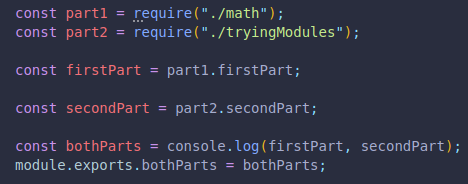

If we want to access parts of different files, we can call them individually, and then create a new array with all of them.
If all this is done in a file called index.js, we can save it to a variable and export it, to be referenced from anywhere else.
It NEEDS to be named index.js, since when called, node will look for that name in the folder.
This is done when using third party libraries.
